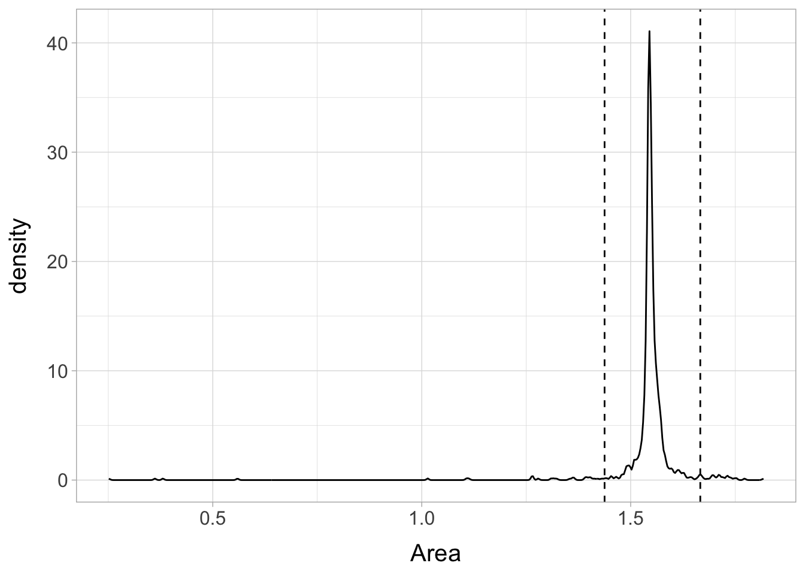
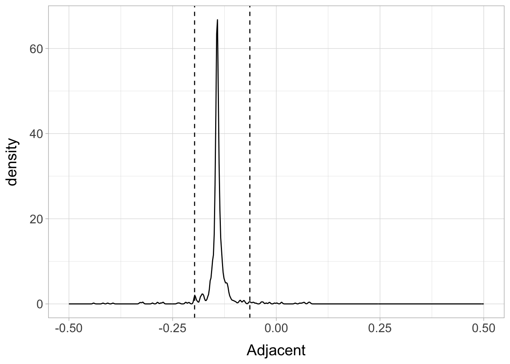

# List of packages required:
packages <- c("tidyverse", "PNWColors", "janitor", "faraway", "broom", "DHARMa", "emmeans", "performance", "nlme", "MASS", "broom.helpers")
# Load packages into session
lapply(packages, require, character.only = TRUE)
rm(packages)
# Ensure functions with duplicate names are from the correct package
select <- dplyr::select
map <- purrr::map
summarize <- dplyr::summarize
clean_names <- janitor::clean_names
margin <- ggplot2::margin
set.seed(123) #Set seed for pseudo-random number generator, for reproducibility
mytheme <- theme_light()+ #define custom theme for ggplots
theme(axis.title.y = element_text(margin = margin(t = 0, r = 10, l = 0)),
axis.title.x = element_text(margin = margin(t = 10, l = 0)),
text=element_text(size=15))Problems with Model Errors
Chapter 8: Problems with the Error
8.1 Generalized Least Squares
We have previously assumed \(\text{var}(e)=\sigma^2 I\), but suppose that the errors have non-constant variance, \(\text{var}(e)=\sigma^2 \Sigma\), where \(\sigma^2\) is unknown and \(\Sigma\) is known: we know the correlation and relative variance between the errors, but not the absolute scale of the variation.
We can write \(\Sigma = SS^\top\) , where S is a triangular matrix using the Choleski decomposition, which be can be viewed as a square root for a matrix. We can transform the regression model as follows: \[\begin{align*} y &= X\beta +e S^{-1}y &=S^{-1}X \beta+S^{-1}e y' &= X'\beta+e' \end{align*}\] Then, \(\text{var}(e')=\text{var}(S^{-1}e)=S^{-1}(\text{var }e)S^{-\top}=S^{-1}\sigma^2 SS^\top S^{-\top}=\sigma^2 I\)
So we can reduce GLS to OLS by a regression of \(y′ = S^{-1}y\) on \(X′ = S^{-1}X\) which has error \(e'=S^{-1}e\) that is i.i.d. We have transformed the problem to the standard case.
Errors between successive observations \(\rightarrow\) autoregressive model, \(e_{i+1}=\phi e_i+\delta_i\) where \(\delta \sim N(0, \tau^2)\)
lmod <- lm(nhtemp ~ wusa + jasper + westgreen + chesapeake + tornetrask + urals + mongolia + tasman, globwarm)
cor(residuals(lmod)[-1],residuals(lmod)[-length(residuals(lmod))])[1] 0.583339lmtest::dwtest(lmod)
Durbin-Watson test
data: lmod
DW = 0.81661, p-value = 1.402e-15
alternative hypothesis: true autocorrelation is greater than 0car::durbinWatsonTest(lmod) #tidy(car::durbinWatsonTest(lmod)) lag Autocorrelation D-W Statistic p-value
1 0.5710535 0.8166064 0
Alternative hypothesis: rho != 0performance::check_autocorrelation(lmod)Warning: Autocorrelated residuals detected (p < .001).glmod <- gls(nhtemp ~ wusa + jasper + westgreen + chesapeake + tornetrask + urals + mongolia + tasman, correlation=corAR1(form= ~year), data=na.omit(globwarm))
summary(glmod)Generalized least squares fit by REML
Model: nhtemp ~ wusa + jasper + westgreen + chesapeake + tornetrask + urals + mongolia + tasman
Data: na.omit(globwarm)
AIC BIC logLik
-108.2074 -76.16822 65.10371
Correlation Structure: AR(1)
Formula: ~year
Parameter estimate(s):
Phi
0.7109922
Coefficients:
Value Std.Error t-value p-value
(Intercept) -0.23010624 0.06702406 -3.433188 0.0008
wusa 0.06673819 0.09877211 0.675678 0.5004
jasper -0.20244335 0.18802773 -1.076668 0.2835
westgreen -0.00440299 0.08985321 -0.049002 0.9610
chesapeake -0.00735289 0.07349791 -0.100042 0.9205
tornetrask 0.03835169 0.09482515 0.404446 0.6865
urals 0.24142199 0.22871028 1.055580 0.2930
mongolia 0.05694978 0.10489786 0.542907 0.5881
tasman 0.12034918 0.07456983 1.613913 0.1089
Correlation:
(Intr) wusa jasper wstgrn chespk trntrs urals mongol
wusa -0.517
jasper -0.058 -0.299
westgreen 0.330 -0.533 0.121
chesapeake 0.090 -0.314 0.230 0.147
tornetrask -0.430 0.499 -0.197 -0.328 -0.441
urals -0.110 -0.142 -0.265 0.075 -0.064 -0.346
mongolia 0.459 -0.437 -0.205 0.217 0.449 -0.343 -0.371
tasman 0.037 -0.322 0.065 0.134 0.116 -0.434 0.416 -0.017
Standardized residuals:
Min Q1 Med Q3 Max
-2.31122523 -0.53484054 0.02342908 0.50015642 2.97224724
Residual standard error: 0.204572
Degrees of freedom: 145 total; 136 residualintervals(glmod,which="var-cov")Approximate 95% confidence intervals
Correlation structure:
lower est. upper
Phi 0.509981 0.7109922 0.8383726
Residual standard error:
lower est. upper
0.1540719 0.2045720 0.2716246 Also arises in spatial data & blocked designs, for example:
glmod <- gls(yield ~ variety, oatvar, correlation = corCompSymm(form
= ~1 | block))
intervals(glmod)Approximate 95% confidence intervals
Coefficients:
lower est. upper
(Intercept) 291.542999 334.4 377.2570009
variety2 -4.903898 42.2 89.3038984
variety3 -18.903898 28.2 75.3038984
variety4 -94.703898 -47.6 -0.4961016
variety5 57.896102 105.0 152.1038984
variety6 -50.903898 -3.8 43.3038984
variety7 -63.103898 -16.0 31.1038984
variety8 2.696102 49.8 96.9038984
Correlation structure:
lower est. upper
Rho 0.05100649 0.3959955 0.7665766
Residual standard error:
lower est. upper
33.02434 47.04679 67.02329 There is evidence of a non-zero correlation of ~0.4 between the errors within the blocks.
8.2 Weighted Least Squares (WLS)
- A special case of GLS
- Errors are uncorrelated, but have unequal variance where the form of the inequality is known.
- \(\Sigma\) is diagonal but the entries are not equal
- Set \(\Sigma = \text{diag}(1/w_1,\ldots,1/w_n)\), where the \(w_i\) are the weights so \(S=\text{diag}(\sqrt{1/w_1},\ldots,\sqrt{1/w_n})\)
- Then regress \(\sqrt{w_i}y_i\) on \(\sqrt{w_i}x_i\) (although the column of ones in the X-matrix needs to be replaced with \(\sqrt{w_i}\))
- Residuals are modified to use \(\sqrt{w_i}\hat{e}_i\)
- Cases with low variability get a high weight and those with high variability a low weight.
Examples
- Errors proportional to a predictor: \(\text{var}(e) \propto x_i\) suggests \(w_i = x^{−1}_i\). One might choose this option after observing a positive relationship in a plot of \(\lvert \hat{e}_i \rvert\) against \(x_i\).
- When the \(Y_i\) are the averages of \(n_i\) observations, then \(\text{var}(y_i)= \text{var}(e_i)= \sigma^2/n_i\), which suggests \(w_i=n_i\)
- When the observed responses are known to be of varying quality, weights may be assigned \(w_i = 1/\text{sd}(y_i)\).
8.4 Robust Regression
When the errors are normally distributed, OLS is best, but long-tailed error distributions can cause difficulties because a few extreme cases can have a large effect on the fitted model. Robust regression is designed to estimate the mean relationship between the predictors and response, \(EY = X\beta\).
M-Estimation
M-estimates modify the least squares idea to choose \(\beta\) to minimize: \[\sum_{i=1}^n \rho(y_i - x_i^\top \beta) \]
Possible choices for \(\rho\) include:
- \(\rho(x)=x^2\) is just OLS
- \(\rho(x)=\lvert x \rvert\) is called least absolute deviation (LAD) regression or \(L_1\) regression.
- \[ \rho(x)= \begin{cases} x^2/2 & \text{if } \lvert x \rvert \leq c \\ c\lvert x \rvert \leq -c^2/2 & \text{ otherwise} \end{cases} \tag{1}\]
Equation 1 is called Huber’s method and is a compromise between least squares and LAD regression. \(c\) should be a robust estimate of \(\sigma\); a value proportional to the median of \(\lvert \hat{e} \rvert\)$ is suitable.
M-estimation is related to weighted least squares, where \(w(u) = \rho′\;(u)/u\).
We find for our choices of ρ above that: 1. LS: \(w(u)\) is constant and the estimator is simply OLS. - \(\rho'(x) = 2x\), so \(\rho′\;(x)/x=2x/x=2\) 2. LAD: \(w(u) = 1/|u|\). We see how the weight goes down as \(u\) moves away from 0, so that more extreme observations get downweighted. However, the asymptote at 0 makes a weighting approach to fitting an LAD regression infeasible without some modification. 3. Huber: \[\begin{equation*} w(u)= \begin{cases} 1 & \text{if } \lvert u \rvert \leq c \\ c/\lvert u \rvert & \text{ otherwise} \end{cases} \end{equation*}\]
This sensibly combines the downweighting of extreme cases with equal weighting for the middle cases.
The Huber method is the default for the rlm function:
rlmod<-rlm(Species ~ Area + Elevation + Nearest + Scruz + Adjacent,gala)
summary(rlmod)
Call: rlm(formula = Species ~ Area + Elevation + Nearest + Scruz +
Adjacent, data = gala)
Residuals:
Min 1Q Median 3Q Max
-74.389 -18.353 -6.364 21.187 229.082
Coefficients:
Value Std. Error t value
(Intercept) 6.3611 12.3897 0.5134
Area -0.0061 0.0145 -0.4214
Elevation 0.2476 0.0347 7.1320
Nearest 0.3592 0.6819 0.5267
Scruz -0.1952 0.1393 -1.4013
Adjacent -0.0546 0.0114 -4.7648
Residual standard error: 29.73 on 24 degrees of freedomIt is worth looking at the weights assigned by the final fit. We extract and name the smallest 10 weights. The remaining weights are all ones.
wts <- rlmod$w
names(wts) <- row.names(gala)
head(sort(wts),10) SantaCruz SantaMaria SanCristobal Pinta Gardner1 Espanola
0.1745816 0.3078288 0.4142330 0.5375752 0.6613011 0.6795050
Gardner2 Baltra Bartolome Caldwell
0.8500380 1.0000000 1.0000000 1.0000000 We can see that a few islands are substantially discounted in the calculation of the robust fit. Provided we do not believe there are mistakes in the data for these cases, we should think carefully about what might be unusual about these islands. The main purpose in analyzing these data is likely to explain the relationship between the predictors and the response. Although the robust fit gives numerically different output, the overall impression of what predictors are significant in explaining the response is unchanged. Thus the robust regression has provided some measure of confirmation. Furthermore, it has identified a few islands which are not fit so well by the model.
We can also do LAD regression using the quantreg package. The default option does LAD while other options allow for quantile regression:
l1mod <- quantreg::rq(Species ~Area+Elevation+Nearest+Scruz+Adjacent, data=gala)
summary(l1mod)
Call: quantreg::rq(formula = Species ~ Area + Elevation + Nearest +
Scruz + Adjacent, data = gala)
tau: [1] 0.5
Coefficients:
coefficients lower bd upper bd
(Intercept) 1.31445 -19.87777 24.37411
Area -0.00306 -0.03185 0.52800
Elevation 0.23211 0.12453 0.50196
Nearest 0.16366 -3.16339 2.98896
Scruz -0.12314 -0.47987 0.13476
Adjacent -0.05185 -0.10458 0.01739Least Trimmed Squares (LTS)
The Huber and \(L_1\) methods will still fail if the large errors are sufficiently numerous and extreme in value. For example, very bad data entry errors might be made or measurement equipment might malfunction in a serious way. We need methods that still fit the correct data well even in the presence of such problems. LTS is an example of a resistant regression method. Resistant methods are good for dealing with data where we expect a certain number of bad observations that we want to have no weight in the analysis.
LTS minimizes the sum of squares of the \(q\) smallest residuals, \(\sum^q_{i=1} \hat{e}_{(i)}^2\), where \(q\) is some number less than \(n\) and \((i)\) indicates sorting. This method has a high breakdown point because it can tolerate a large number of outliers depending on how \(q\) is chosen. For the Galapagos data:
set.seed(123)
ltsmod <- MASS::ltsreg(Species ~ Area + Elevation + Nearest + Scruz + Adjacent, gala)
coef(ltsmod)(Intercept) Area Elevation Nearest Scruz Adjacent
12.50668352 1.54535820 0.01672532 0.52348693 -0.09407229 -0.14259212 # ltsmod_exact <- ltsreg(Species ~ Area + Elevation + Nearest + Scruz + Adjacent, gala,
# nsamp="exact")
# coef(ltsmod_exact)However, we do not have standard errors for the LTS regression coefficients. We can use bootstrapping, as follows: 1. Generate \(e^∗\) by sampling with replacement from \(\hat{e}_1, \ldots, \hat{e}_n\). 2. Form \(y^∗ = X\hat{\beta}+e^∗\). 3. Compute \(\hat{\beta}^*\) from \((X, y^∗)\).
bcoef <- matrix(0,1000,6)
for(i in 1:1000){
newy <- predict(ltsmod) + residuals(ltsmod)[sample(30,rep=T)]
brg <- ltsreg(newy ~ Area + Elevation + Nearest + Scruz + Adjacent
, gala , nsamp="best")
bcoef[i,] <- brg$coef
}colnames(bcoef) <- names(coef(ltsmod))
(quants <- apply(bcoef,2,function(x) quantile(x, c(0.025,0.975)))) (Intercept) Area Elevation Nearest Scruz Adjacent
2.5% 1.412877 1.437543 -0.03415286 -0.4172014 -0.3159858 -0.19703956
97.5% 31.382253 1.666588 0.09547331 2.2739460 0.2219613 -0.06381921bcoef <- data.frame(bcoef)
p1 <- ggplot(bcoef, aes(x = Area)) + geom_density() + mytheme
p1 + geom_vline(xintercept=c(quants[1,2], quants[2,2]), linetype="dashed")
p2 <- ggplot(bcoef, aes(x = Adjacent)) + geom_density() + mytheme+xlim(-0.5, 0.5)
p2 + geom_vline(xintercept=c(quants[1,6], quants[2,6]), linetype="dashed")
Chapter 9: Transformation
Transformations of the response and/or predictors can improve the fit and correct violations of model assumptions such as non-constant error variance. We may also consider adding additional predictors that are functions of the existing predictors like quadratic or cross-product terms.
9.1 Transforming the response
Suppose that you are contemplating a logged response in a simple regression situation: \(\log{y} = \beta_0 +\beta_1x+e\)
In the original scale of the response, this model becomes: \[y = \exp(\beta_0 +\beta_1x)· \exp(e) \quad(9.1)\]
In this model, the errors enter multiplicatively and not additively as they usually do, so the use of standard regression methods for the logged response model requires that we believe the errors enter multiplicatively in the original scale.